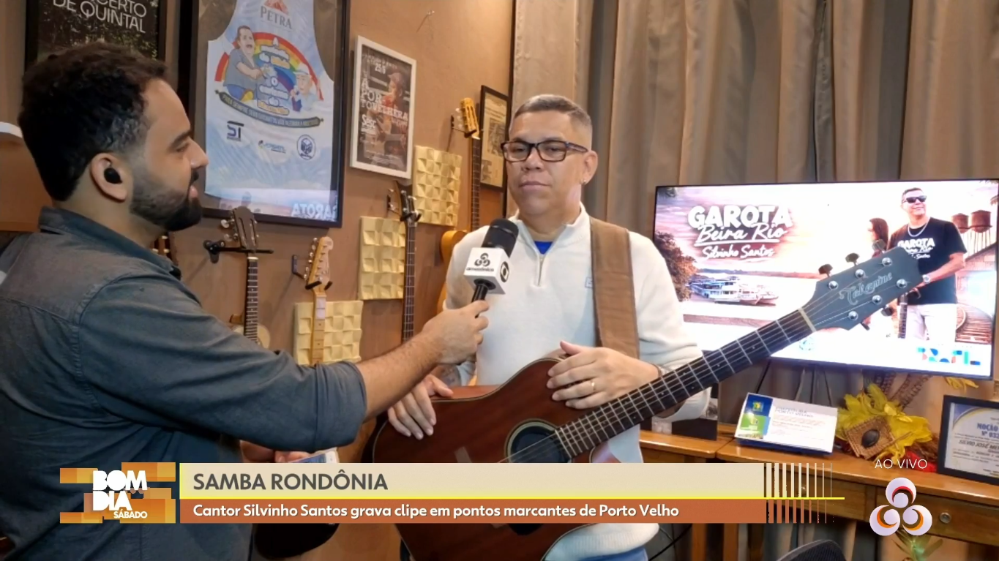
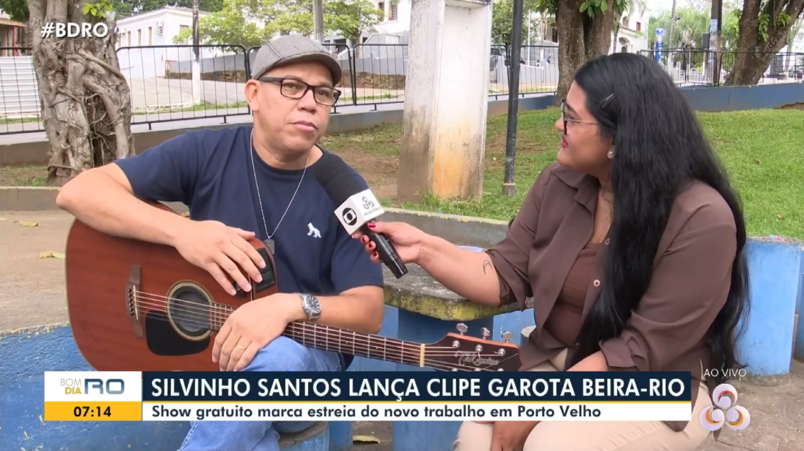
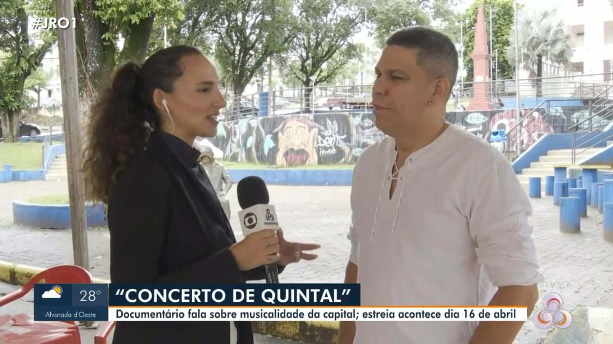
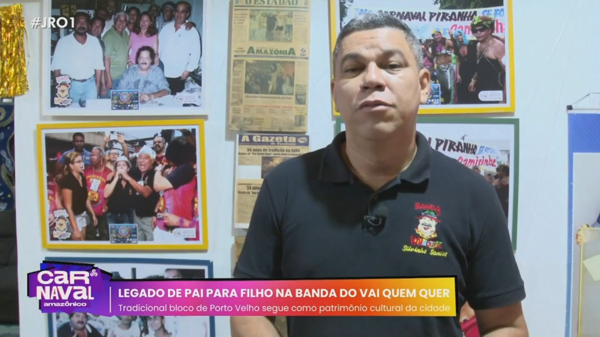
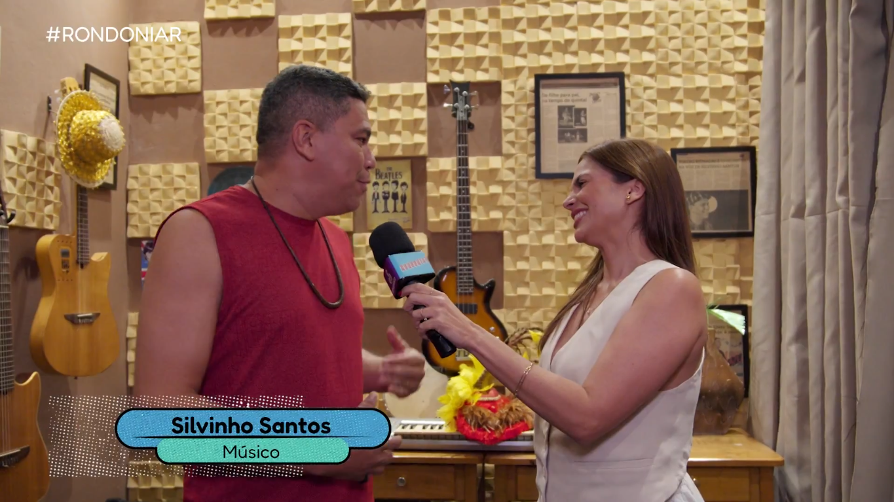
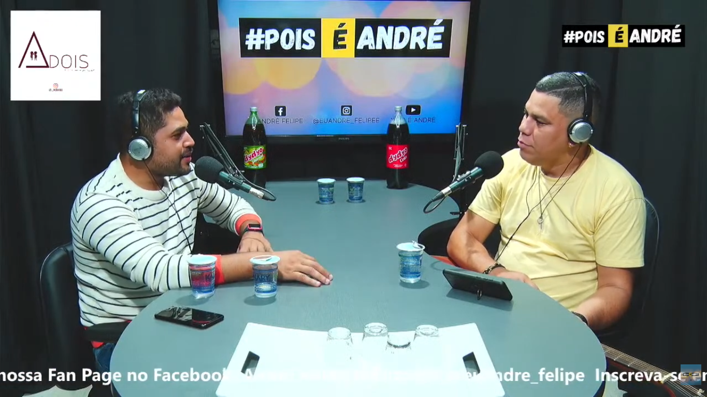
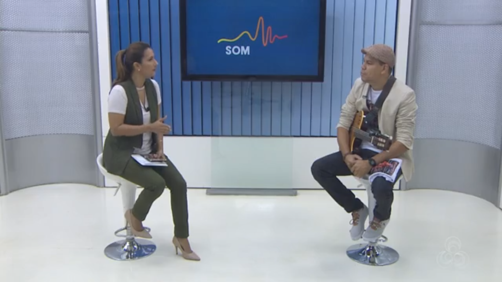

podcast - podblá
O Podblá é um podcast que promove a cultura de Rondônia e da região Norte, dando visibilidade à arte da Amazônia. Aborda manifestações como música, dança, teatro, folclore, além de costumes e eventos culturais.
Assistir no YouTube"Voz e Violão no Coração da Amazônia"
Um artista versátil que contempla em seu repertório desde o cancioneiro regional aos clássicos internacionais da música. Silvinho Santos é músico nascido em Porto Velho capital do Estado de Rondônia. Desde a infância permeado as alegorias e barracões das escolas de samba e universo carnavalesco influenciado pelo pai, Silvinho foi assimilando as raízes da música brasileira através do samba e assim desenvolvendo sua personalidade musical. Autodidata, o seu instrumento é o violão. Seu primeiro trabalho profissional com música se deu em 1997 quando, junto com amigos, fundou a banda KURTIÇÃO, onde era vocalista e guitarrista. Logo veio a carreira solo em 2002, quando foi premiado em festivais como compositor e intérprete, desde então o artista dedicou-se ao trabalho solo autoral, porém se apresentando com voz e violão nos bares mais badalados da cidade de Porto Velho. Com três álbuns autorais gravados Silvinho Santos tem uma sólida carreira já faz parte do rol dos grandes artistas do Estado de Rondônia. Versatilidade é o que define esse artista nortista, amazônida, verdadeiro e que tem orgulho de cantar suas raízes e falar do seu povo.
20+
ANOS DE ESTRADA
3
ÁLBUNS AUTORAIS
JORNADA MUSICAL
Uma canção emblemática para quem é de Porto Velho. "À Portovelhera" foi o primeiro single de Silvinho Santos a ser lançado nas plataformas de streaming, e hoje considerada uma das grandes obras musicais que fazem alusão à capital rondoniense, apresentando uma letra que tem na sua essência o modo de viver do povo portovelhense.
2015

Um EP que mostra a versatilidade do compositor Silvinho Santos, com músicas que refletem a riqueza cultural e natural da região amazônica. Com ritmos que passeiam do forró ao reggae, Made in Amazônia é a tradução em forma de música de uma cultura literalmente forjada pela miscigenação.
2016

Neste trabalho Silvinho Santos viaja em banzeiros diferentes. Em "A Remada Continua", o artista aposta em conteúdos mais universais, saindo um pouco da linha regional e apresentando baladas românticas, pop rock, chorinho e até mesmo tango.
2021
Silvinho Santos mostra sua faceta folclorista em O Som Que Vem Do Norte, pt.2. Neste álbum de composições, cem porcento autorais, voltadas ao movimento folclórico do boi-bumbá, o artista viaja nas lendas e crenças regionais. O repertório é composto por toadas que sagraram-se premiadas nos festivais aos quais Silvinho Santos participou.
2021

Confira aqui, projetos da carreira de Silvinho Santos disponíveis. Alguns trabalhos independentes, outros através de parcerias, festivais e entre outras participações.
O Podblá é um podcast que promove a cultura de Rondônia e da região Norte, dando visibilidade à arte da Amazônia. Aborda manifestações como música, dança, teatro, folclore, além de costumes e eventos culturais.
Assistir no YouTubeLançamento do primeiro álbum de Silvinho Santos "À Portovelhera" no Teatro 1 do SESC-RO.
Aqui você fica sabendo um pouco mais da trajetória de Silvinho Santos através de entrevistas e participações.

21 MAR 2026
Silvinho Santos divulga o videoclipe "Garota Beira Rio".
Fonte: Globoplay

20 MAR 2026
O cantor e compositor Silvinho Santos acaba de lançar sua nova música,que chega acompanhada de um clipe cheio de identidade regional.
Fonte: Globoplay
10 FEV 2026
Silvinho Santos fala sobre a responsabilidade de seguir o legado do pai, Silvio Santos, e manter viva a tradição musical da Banda do Vai Quem Quer no Carnaval 2026.
Fonte: Canal SIC TV

05 ABR 2025
Filme traz acervo inédito da família do cantor Silvinho Santos.
Fonte: Globoplay

28 FEV 2025
Silvinho é considerado um dos pilares da continuidade da Banda do Vai Quem Quer.
Fonte: Globoplay
03 FEV 2025
Banda do Vai Quem Quer 2025 - Café da manhã para imprensa a autoridades e empresários.
Fonte: TVC Amazônia

20 JUL 2024
Programa viaja pela história da carreira musical do cantor Silvinho Santos, personalidade Rondoniense.
Fonte: Globoplay

06 DEZ 2021
Silvinho Santos fala de sua trajetória e seu álbum gravado em 2021 (A Remada Continua). O artista também fala sobre a dor de perder o seu pai durante a pandemia e a importância dele para sua formação artística.
Fonte: Canal Pois é André

06 JAN 2018
Conheça o trabalho do cantor local no quadro 'Som RO'.
Fonte: Globoplay
08 SET 2017
Participação no quadro "Eu Nasci pra Cantar"
Fonte: Canal SIC TV
23 FEV 2017
Conheça um pouco da atuação de Silvinho Santos no maior bloco carnavalesco da região norte.
Fonte: Jornal Eletrônico NewsRondônia
03 DEZ 2015
Silvinho Santos é vocalista no: Tributo Raul Seixas e Tributo Legião Urbana promovido "Projeto Rock in City"
Fonte: Canal Rock Rondônia
03 NOV 2015
Silvinho Santos fala sobre o início da carreira em grupo de pagode e como compôs uma das suas primeiras músicas premiada no Festival Aberto de Música (FAM) - SESC
Fonte: Programa Microfonia 2015
01 NOV 2015
Participação de Silvinho Santos no Festival NEMA.
Fonte: Programa Microfonia 2015